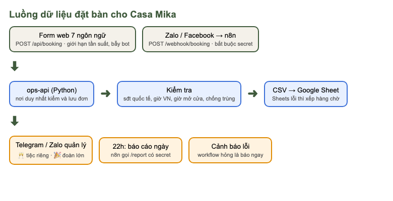
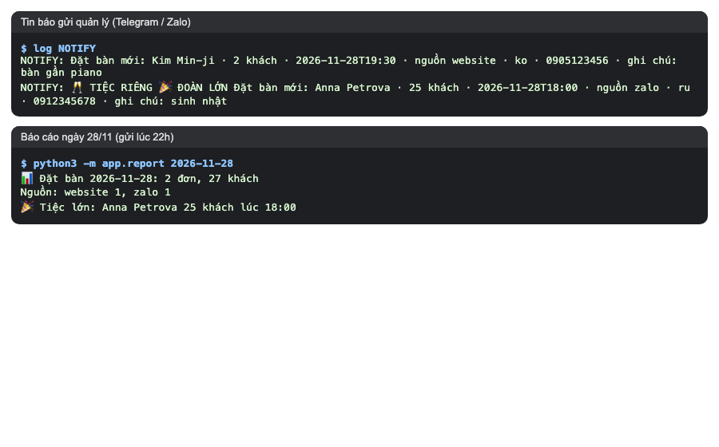
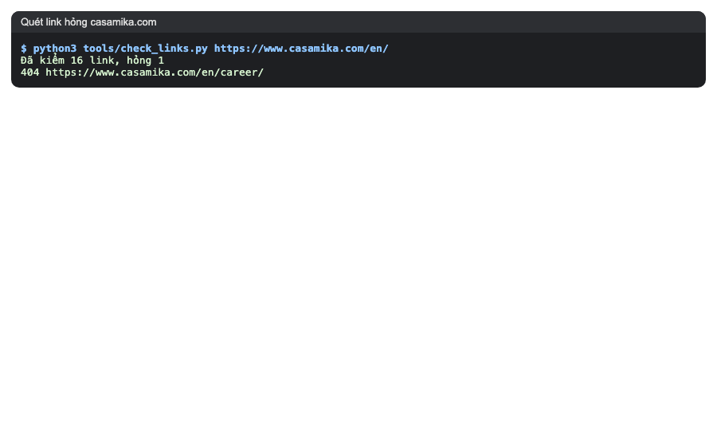
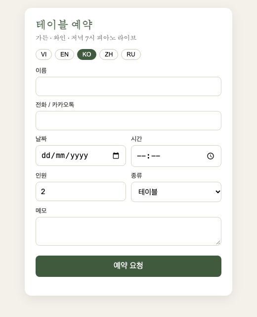
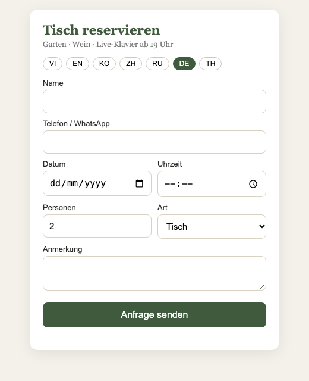

Tài liệu giải thích hệ thống làm gì, đã kiểm thử ra sao, khớp với cách Casa Mika vận hành tới đâu, và cách chạy từng bước. Bản cập nhật 25/11/2026, sau khi Muse kiểm thử độc lập và các lỗi tìm được đã sửa.
Casa Mika nhận khách qua nhiều đường: nút Reserve dẫn sang Google Maps, điện thoại, Zalo, Facebook, khách đặt tiệc riêng và tiệc cưới. Quán mở từ 7:30 tới khuya, nhiều ca, khách nói nhiều thứ tiếng (website có 7 ngôn ngữ). Đơn nằm rải rác thì dễ sót, quản lý không biết tối nay bao nhiêu khách, tiệc lớn không được chuẩn bị trước.
Hệ thống có một nơi duy nhất kiểm và lưu đơn (ops-api). Form trên web và các kênh khác đều đổ về đây. Quản lý nhận tin ngay, tiệc riêng và đoàn lớn được đánh dấu, 22h có báo cáo, workflow lỗi thì báo về.


Trong log, số điện thoại được che. Tin gửi Telegram hoặc Zalo cho quản lý có số đầy đủ để gọi lại khách.

Muse (AI agent kiểm thử) đã tải kho về máy khác, chạy 35 trường hợp khó và soát toàn bộ code. Các lỗi tìm được và đã sửa:
| Lỗi Muse tìm được | Đã sửa thế nào | Bài kiểm thử |
|---|---|---|
| 20 đơn giống nhau gửi cùng lúc ghi trùng 2 dòng | Kiểm trùng và ghi trong cùng một khóa | test_concurrent_duplicates_write_once |
| Gửi đồng thời bị rớt kết nối | Tăng hàng chờ kết nối lên 128 | test_50_parallel_requests_all_answered |
| Máy chủ ở nước ngoài thì kiểm "giờ đã qua" sai | Mọi phép tính giờ theo giờ Việt Nam +07:00 | test_timezone_aware |
| Giờ kèm múi giờ làm sập yêu cầu | Đổi về giờ Việt Nam trước khi kiểm | test_timezone_aware |
| Số Trung Quốc +86 bị từ chối | Nhận tới 15 chữ số theo chuẩn quốc tế | test_phone_formats |
84905… và +84905… thành 2 đơn | Cùng quy về 0905… | test_phone_formats |
| Nhận đặt bàn lúc 3h sáng, năm 2099 | Kiểm giờ nhận khách, tối đa 90 ngày | test_opening_hours, test_time_rules |
12.9 khách thành 12, true thành 1 | Chỉ nhận số nguyên | test_party_size_types |
Form vỡ khi ?lang=de | Thêm tiếng Đức, Thái; ngôn ngữ lạ quay về tiếng Việt | test_form_has_7_languages |
| Google Sheets lỗi thì báo khách thất bại dù đơn đã lưu | Đơn vẫn nhận, Sheets xếp hàng chờ đẩy lại, báo quản lý | test_sheets_failure_keeps_booking_and_queues |
| Secret mặc định tắt, so sánh không an toàn | Webhook và báo cáo bắt buộc secret, so sánh bằng hmac.compare_digest | test_webhook_requires_secret |
| Không chống spam | Form giới hạn 10 đơn/10 phút/IP, có ô ẩn bẫy bot | test_limit, test_honeypot |
/report lộ tên khách | Bắt buộc secret | test_report_and_health |
| Số điện thoại khách nằm trong log | Che số trong log | test_mask_phone_in_log |
| Body lớn, sai Content-Type, Content-Length rác làm treo | Trả 413, 415, 400 rõ ràng | test_bad_requests_get_answers |
| File CSV hỏng làm server không chạy | Bỏ qua dữ liệu hỏng, ghi cảnh báo | test_bad_csv_does_not_crash |
| n8n tự kiểm riêng, khác ops-api | n8n chỉ chuyển đơn sang ops-api, ops-api là nơi duy nhất kiểm | 3 workflow đã import vào n8n 2.49.5 |
| Cổng n8n lộ ra ngoài | Chỉ mở trong máy, đi qua reverse proxy HTTPS; webhook n8n có header auth | docker-compose.yml |
| README nói quá 7 chỗ | Viết lại đúng với code, thêm mục "Chưa làm" | README.md |

Giống 7 ngôn ngữ trên casamika.com: Việt, Anh, Hàn, Trung, Nga, Đức, Thái. Có lựa chọn "Tiệc riêng / sự kiện", chặn chọn ngày đã qua, gửi lỗi thì hiện số điện thoại quán để khách gọi.
| Tiếng Việt | Tiếng Hàn | Tiếng Đức |
|---|---|---|
 |  |  |
| Nhu cầu của Casa Mika | Hiện tại | Mức khớp |
|---|---|---|
| Đơn từ web về một chỗ | Form /booking → ops-api → CSV và Google Sheet | Khớp |
| Đơn từ Zalo, Facebook | n8n nhận rồi chuyển ops-api. Cần bot hoặc nhân viên điền theo mẫu, chưa tự đọc tin nhắn tự do | Khớp một phần |
| Tiệc riêng, tiệc cưới, đoàn lớn | Nhãn 🥂 và 🎉, ngưỡng chỉnh được | Khớp |
| Giờ mở cửa | Theo web: T2–T6 07:30–24:00, T7–CN 07:30–00:30. Thông tin khác ghi 8h–24h, cuối tuần tới 1h | Cần quán chốt giờ thật |
| Khách nhiều quốc tịch | Form 7 ngôn ngữ, nhận số quốc tế, lưu ngôn ngữ khách | Khớp |
| Báo quản lý | Telegram hoặc Zalo OA, chọn bằng NOTIFY_CHANNEL | Khớp |
| Đơn Google Maps Reserve | Chưa nối được: Google chỉ mở cho đối tác đặt bàn chính thức | Chưa khớp |
| Sơ đồ bàn, sức chứa vườn và nhà kính | Chưa có | Cần sơ đồ của quán |
| Nhắn xác nhận cho khách | Chưa có, cần Zalo OA hoặc ZNS có mẫu được duyệt | Cần OA của quán |
| POS, đặt cọc tiệc | Chưa có | Cần hỏi khi phỏng vấn |
git clone https://github.com/yeuvietsub1520/casa-ops-automation cd casa-ops-automation python3 -m unittest discover -s tests -v WEBHOOK_SECRET=thu-nghiem NOTIFY_CHANNEL=log python3 -m app.server
Mở http://localhost:8080/booking, điền form, bấm Gửi. Terminal hiện dòng NOTIFY: Đặt bàn mới….
1. Trong Telegram nhắn @BotFather lệnh /newbot, đặt tên, nhận token.
2. Thêm bot vào nhóm quản lý, lấy chat id.
3. cp .env.example .env, điền WEBHOOK_SECRET (tạo bằng openssl rand -hex 24), NOTIFY_CHANNEL=telegram, TELEGRAM_BOT_TOKEN, TELEGRAM_CHAT_ID.
NOTIFY_CHANNEL=zalo, ZALO_OA_TOKEN, ZALO_USER_ID. Người nhận phải đã quan tâm OA.
Tạo Sheet có trang "DatBan", vào Tiện ích mở rộng → Apps Script, dán đoạn dưới, triển khai dạng Ứng dụng web, chép URL vào SHEETS_WEBHOOK_URL, đặt cùng chuỗi bí mật vào SHEETS_SECRET.
function doPost(e) {
const d = JSON.parse(e.postData.contents);
if (d.secret !== PropertiesService.getScriptProperties().getProperty('SECRET')) return ContentService.createTextOutput('denied');
SpreadsheetApp.getActive().getSheetByName('DatBan').appendRow(
[d.received_at, d.type, d.name, d.phone, d.party_size, d.time, d.source, d.note, d.lang]);
return ContentService.createTextOutput('ok');
}
docker compose up -d docker compose exec n8n n8n import:workflow --separate --input=/workflows
Đặt reverse proxy HTTPS (Caddy hoặc Nginx) cho cổng 8080 và 5678. Trong n8n tạo credential Telegram và Header Auth, gán vào node, bật 3 workflow.
Thêm trang /reserve trỏ tới form, hoặc đổi nút Reserve. Chốt giờ mở cửa thật vào OPEN_HOURS.
"Khách đặt trên web, hoặc qua Zalo, Facebook rồi n8n chuyển vào, đều về một máy chủ Python. Máy chủ kiểm số điện thoại kể cả số nước ngoài, giờ theo giờ Việt Nam và giờ mở cửa, chống trùng kể cả khi nhiều đơn gửi cùng lúc, rồi lưu và đẩy sang Google Sheet. Sheet lỗi thì đơn vẫn giữ và đẩy lại sau. Quản lý nhận tin ngay trên Telegram hoặc Zalo, tiệc riêng và đoàn lớn được đánh dấu, 22h có báo cáo. Em đã nhờ một AI agent khác kiểm thử độc lập, sửa hết lỗi nó tìm ra, mỗi lỗi có bài kiểm thử riêng. Phần Google Reserve, sơ đồ bàn và POS em cần xem hệ thống của quán để nối tiếp."